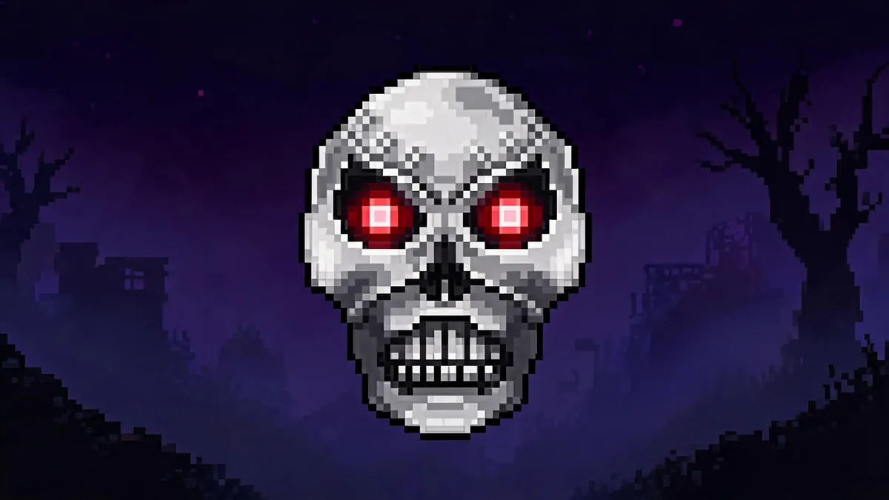

Skeletron Prime Guide —Mechanical Dungeon Guardian

| Property | Details |
|---|---|
| HP | 28,000 (Head) + 4 arms x 4,000-6,000 each / 50,400 + arms (Expert) |
| Defense | 24 (Head, spinning) / 24 (Vice) / 20 (Saw) / 30 (Cannon) / 40 (Laser) |
| KB Resistance | 100% |
| Must Know | Dawn enrages him —must be defeated before 4:30 AM |
| Spawn | Use a Mechanical Skull at night |
Hardest Mechanical Boss
Skeletron Prime is widely considered the hardest of the three mechanical bosses. He has four arms with different attack patterns, a spinning head phase, and a dawn insta-kill. Don't fight him first —start with The Destroyer, then The Twins, then Prime.
Preparation
- Armor: Hallowed Armor (if you've beaten another mech boss) or Adamantite/Titanium.
- Weapons: Megashark with Crystal or Ichor Bullets, Daedalus Stormbow with Holy Arrows (less effective than against Destroyer but still works), Golden Shower + high-damage magic weapon for mages, Shadowflame Knife or a yoyo for melee.
- Accessories: Wings, Lightning Boots, Star Veil, Cross Necklace, class emblem.
- Arena: Long skybridge or multi-platform arena, 100+ blocks wide with campfires every 50 blocks.
Strategy
Hand Priority
Kill the arms in this specific order:
- Laser Arm first. It fires fast lasers that are hard to dodge. Removing it reduces incoming damage significantly.
- Cannon Arm second. Fires bomblike projectiles that explode. Annoying but slower than the laser.
- Saw Arm or Vice Arm. These are melee-range arms. If you're keeping distance, they're less threatening. The Vice grabs you, which can be dangerous —consider killing it earlier if you're getting grabbed.
Head Fight
After all four arms are destroyed, the head enters spinning mode (similar to Skeletron). It fires faster and chases aggressively:
- Stay in motion on your skybridge. The head chases but can't keep up if you're sprinting.
- Jump over the head when it spins toward you.
- The head has 28,000 HP with 24 defense in spinning mode. It's a damage race at this point.
- Watch the time —if dawn is approaching, increase your DPS and stop dodging as carefully.
Time Management
The fight starts at 7:30 PM and dawn is at 4:30 AM. You have 9 real-time minutes. Against The Twins or The Destroyer, that's plenty. Against Skeletron Prime, you might need all of it. Start the fight immediately at nightfall.
Rewards —What's Worth Your Time
- Hallowed Bars (15-30) —Worth farming. Drops slightly fewer than The Destroyer, but every bar counts toward Hallowed Armor or Excalibur.
- Souls of Fright (20-40) —Worth farming. Used for the Flamethrower, Nimbus Rod (excellent for events), and Santa Claus arrival. Less essential than Souls of Might but still useful.
Related Guides
- The Destroyer Guide —easier mech boss, do this first
- The Twins Guide —mid-difficulty mech boss
- Boss Progression Order